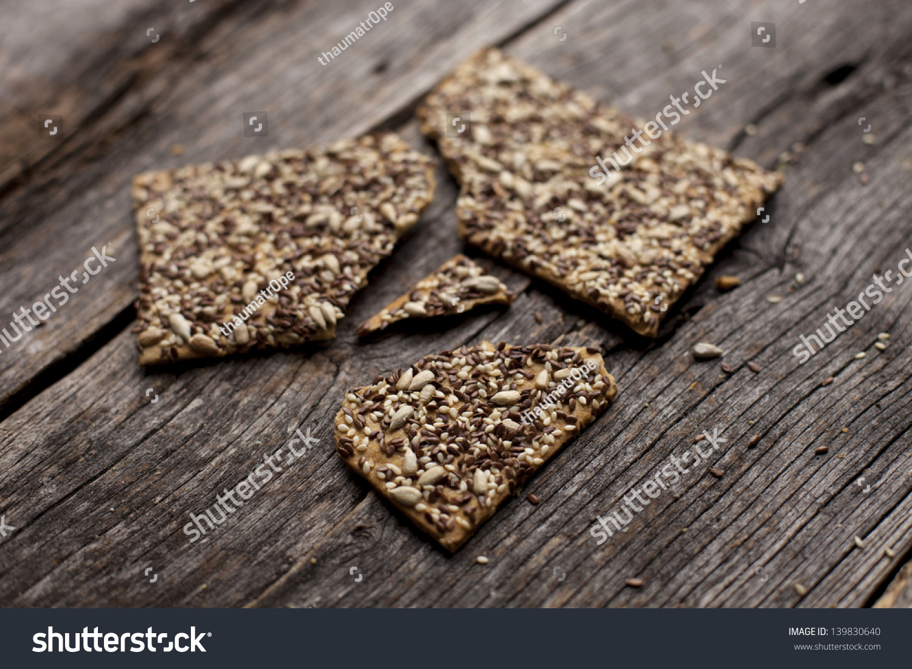

Gluten Free Buckwheat Crackers

Struggling to find a great gluten free cracker recipe? These buckwheat crackers are the perfect solution!
We all know how difficult it is to find a great gluten free cracker. It's even more difficult to find a great
gluten free cracker recipe. I've done the hard work for you and tested out a couple of combos that make a great treat
for those who struggle with celiac disease or gluten intolerance.
The ingredients can all be found in the health section of your local supermarket, or purchased in bulk online.
Don't let the gluten free name fool you. No one will know the difference! In the list below, all ingredients were from
gluten-free sources, even if not specified in the list.
Ingredients
- 2/3 cup Buckwheat Flour
- 1/3 cup Rolled Oats
- 1/2 cup Raw Pumpkin Seeds or Pepitas
- 1/2 cup Raw Sunflower Seeds, shelled
- 1/4 cup Flaxseed (whole)
- 1/2 tsp Sea Salt
- 2 tbsp Olive Oil
- 1/2 - 1 cup Warm Water
- 2 tbsp Honey
Steps
- Put Oats, Sunflower Seeds and Pumpkin Seeds into a food processor and rough chop the mixture. Transfer to mixing bowl and add Buckwheat, Flaxseed, Poppy Seeds and Sea Salt.
- In a glass measuring cup, add 1 cup warm water and dissolve 2 tbsp honey.
- Add 2 tbsp Olive Oil to the dry ingredients and mix together until it's incorporated into a crumbly mixture. Start adding the water and honey mixture to the dry ingredients until it just comes together into a sticky mixture, but not too wet. Start with 1/2 cup and add more water up to 1 cup if needed.
- Preheat oven to 350. While it's heating, line a large sheet pan (10x16? 11x17?) with parchment paper or a silicone mat and transfer mixture to the sheet. Use a second piece of parchment paper to spread the mixture thinly across the sheet pan. It is going to be difficult to spread and it will seem like it won't spread across the entire pan, but I promise that with patience and about 15 minutes of time it will. Work from the middle and spread outwards. If you get cracks or breaks you can squish them back together. If the mixture spreads unevenly to one side, cut it off and move it to an area with less mixture. Spread as evenly as possible.
- Put in oven and bake for 10 minutes. Remove from oven and reduce heat to 275. Score the mixture into 1-1.5" squares (roughly 60 crackers per batch). Return to oven and bake for at least 30 minutes. If the crackers are spread unevenly, some might be finished earlier than others. You can take those off the sheet and bake the rest until crisp.